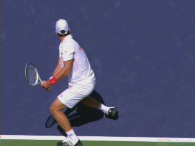
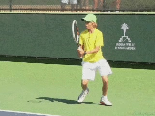
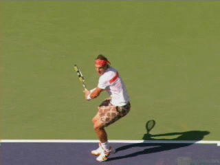
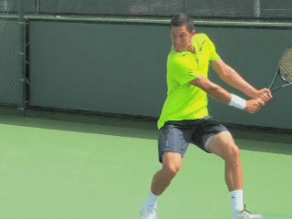
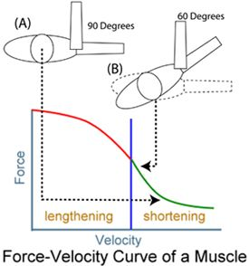
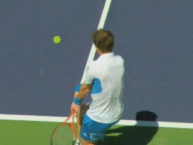
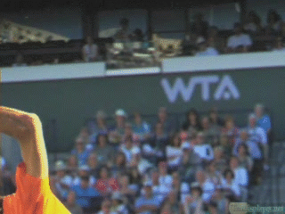
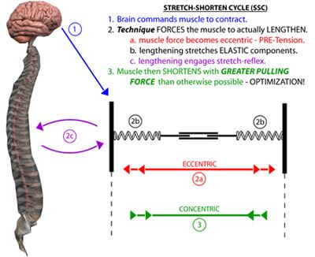
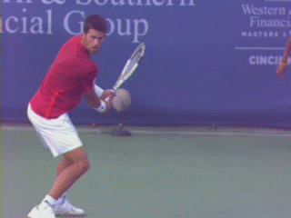
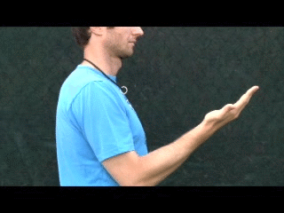

The ATP Two Handed Backhand:¶
Optimizing the Muscles
Dr. Brian Gordon
In the first article I identified the three general types of the two-handed backhand and asserted that there was an optimum type, the type used by top men's pros such as Novak Djokovic. I also argued that this so-called ATP backhand generated more racket speed with less motion and could be taught to players at all levels and of all ages (Click Here).

Let’s look at some of the biomechanics underlying the ATP backhand.
In this article I want to preface our presentation of the actual backhand model to try to give a simplified explanation of the biomechanical principles upon which it based. I think this is important to address independently because, in modern coaching, biomechanical terms are often thrown around casually, and often, incorrectly.
So let's give a brief overview of muscle mechanics and how it is possible that the body could produce more racquet speed with abbreviated ranges of motion when the body segments are activated in the correct sequence. Then in the following articles we can proceed with describing the actual two handed back model.
The Default Choice
How is it possible that a shorter swing could produce greater racket speed? That goes against one long standing theory in teaching. Players "build" racket speed over the course of looping backswings, and larger loops create more speed.

Longer swings are the default choice of many junior players.
Working with junior players you often see players with big, even huge backswings. The fact is that range of motion, generally speaking, appears to be the default choice of the human neuromuscular system to generate endpoint (racquet) velocity.
Translated to tennis this means if you want to generate a lot of swing speed, you want to make as a big swing path as you possibly can. That gives as many joints as possible as much range of motion as possible, with which to generate racquet speed.
So that seems to be the mechanism of choice for developing players. Give a racquet to a young kid and you say hit the ball hard, and you'll see some of the biggest swings that you can imagine.
In contrast, at the highest level of the game the top players are using swing techniques that appear to be substantially shorter. Obviously the combination of speed and spin (heaviness) of the incoming shots is the primary factor that mandates compacting the strokes to stay competitive. Yet the abbreviated stroke patterns don’t seem to have an inhibitory effect on the generation of racquet head speed.

Are compact motions the result of strength alone?
The question is whether the ability to generate extremely fast racquet head speed over a clearly abbreviated swing path is simply a matter of strength. That's a legitimate question, and the coaching implications are important.
Logic and experience dictate that strength is important. Since the top players are stronger they can generate more racket speed with less motion. But are other factors involved? If so, less physically gifted players, even very young junior players, could begin to realize the tactical and developmental advantages of decreased swing size without compromising, perhaps increasing, racquet speed.
What our applied and basic research has shown is that strength is not the only explanation. It's not necessarily as much a matter of strength as it optimizing the neuromuscular performance. That is, its not how much muscle strength you have necessarily, it is the conditions under which the muscles perform that is critical – conditions controllable through technique.
We have developed techniques and tools that allow players to use their muscles more efficiently. We believe that any player at any level, including young junior players, can learn to optimize their neuromuscular performance to produce more racket speed with less motion, more racket speed than with the biggest swings you can imagine.

Technique can allow junior players to use their muscles more efficiently.
The Tool Box
The first step in the development process is to build stroke technique that puts the body segments in the right place at the right time. The goal is to minimize unproductive motion while positioning the joints of the body such that their rotations uniquely contribute to the desired direction of racquet head speed.
This concept was discussed at length in the forehand series. (Click Here.) A notable example was the forward orientation of the upper arm around contact.
The ability to position the upper arm in this way allows internal rotation of the shoulder (twisting of the upper arm) to generate vertical racquet speed enabling the non-twisting shoulder rotations to generate forward racquet speed.
Proper positioning of the segments at the correct time in a given stroke also sets the table for the neuromuscular optimization we try to gain and that is the second step in the stroke development process. This optimization relies on the benefits of sequencing segmental motion plus tapping into the muscular enhancement components of what is known as the stretch-shorten cycle.
Segmental Sequencing
The research of muscle physiologists and biomechanists has shown that the amount of contractile force a muscle can produce is variable. One of the variables is the rate of shortening of the muscle.
If the muscle is shortening during a contraction very quickly, the muscle cannot generate nearly as much force as it could if it were shortening more slowly. So our stroke models are constructed to decrease the contraction velocity of key muscles through segmental sequencing at key points in the chain of joint rotations.
This property of muscular force generation is estimated throughout a stroke by quantifying rotational speed of connected segments. The concept is based on the "force-velocity" relationship of muscle developed by researchers. A generalized force-velocity curve is shown in the image.

The graph shows speed of shortening in relation to force production.
The graph shows the speed or velocity of shortening on the horizontal axis and the force on the vertical axis. When a muscle contracts it attempts to shorten its length. If it succeeds in shortening it is called a concentric contraction. This is shown as the green portion of the curve – note that as the velocity of shortening increases (to right) the force the muscle produces decreases.

Sequencing of motions helps optimize muscle performance.
In some cases a contracting muscle may be forced to lengthen by an external force – that is, the muscle is trying to shorten but is being forced to lengthen. This is known as an eccentric contraction and is the highest force state for a muscle (shown by red portion of the curve).
Figures A & B in the force-velocity curve above illustrate a simple example of how segmental sequencing can optimize muscular performance. Both show an overhead view of a torso and extended (to the side) upper arm. In figure A the arm is repositioned forward by a 90 degree rotation from the shoulder joint. In figure B the same upper arm orientation is achieved by coupling a 30 degree torso rotation with a 60 degree shoulder rotation.
If the events in these diagrams occurred in the same amount of time then the shoulder muscles would have produced 90 degrees of rotation in A but only 60 degrees in B. This implies that the muscle in B was able to contract more slowly than in A thereby operating on a lower velocity, higher force portion of the force velocity curve – muscular optimization.
As sequential motion of the segments becomes even more dynamic, it is possible to create enough rotational speed in one segment that the connected segment will be forced to rotate without any active muscular involvement at the muscles crossing the connecting joint. In coaching this often referred to as a whip action – in biomechanics literature it called a motion-dependent torque.

Rotational speed in the upper arm can create extension without actual muscle involvement.
An example of how technique can be used to create this very beneficial effect was discussed in the serve series. (Click Here.) By establishing necessary rotational speed of the upper arm through sequenced torso and shoulder action, the elbow joint in some servers was extended (straightened) not by muscles crossing the joint, but rather due the force applied to the forearm from motions of the upper arm.
More recently, in my forehand article series (Click Here), the motion of the wrist joint near contact on the forehand was attributed to a motion-dependent torque for those using the ATP style mechanics. The benefits of accomplishing joint rotations through motion-dependent effects are often speeds of rotation generally not attainable with muscle driven joint rotations.
Stretch-Shorten Cycle (SSC)
The stretch-shorten cycle (SSC) refers to a pattern of muscle activation during which an active muscle is stretched prior to it being shortened. It is a common neuromuscular pattern in nearly any human activity and has been shown to increase the force output of a muscle substantially. The implication for tennis, and the reason it is targeted in our development system is that components of the stretch-shorten cycle can be elicited through technique in key muscular actions during the strokes.
Note that I said components because the stretch-shorten cycle has several force enhancement elements which cannot be distinguished by observation, and none of which that can be even inferred without 3D data acquisition and advanced analytical algorithms.

A simplified diagram of the stretch-shorten cycle.
The diagram provides a simplified illustration of the components and chain of events in a generalized stretch-shorten pattern and assumes technique characteristics cause the muscle to be stretched. The muscle is shown in black attached to two vertical ends and made up of a contractile element (parallel lines) in the middle and "springy" elastic elements at each end.

Pre-tension allows full muscle output immediately.
The stretch shorten cycle would be engaged if the muscle was prompted to contract, but a technique action caused it to actually lengthen. This is called an eccentric contraction. In this high tension state the muscle would already be fully activated, or pre-tensed, when allowed to concentrically shorten. Since a muscle normally needs a ramp up time to reach full force, the pre-tension eliminates the time lag allowing full force output immediately. <<To make this on any shot, do the same pre-tension with the non-hitting arm behind the body and the non-hitting hand keeping the racket on the throat>>
While this is likely the biggest factor in stroke production and the one that can be inferred with 3D measurement and analysis in some muscle groups, other force enhancement components of the stretch shorten cycle have been identified. As the muscle is stretched eccentrically, the elastic elements are stretched in kind providing for elastic energy return upon shortening.
Further, the stretch can activate muscle sensory bodies setting off a spinal stretch-reflex providing further force enhancement. The elastic return and stretch reflex are very time sensitive, however, and probably not as important in the muscle groups of the upper body.
As a practical example of the stretch shorten cycle, let's say that I’m trying to bend my elbow (elbow flexion) and someone pushes on my hand and simultaneously forces the arm in the opposite direction (extension or straightening). So in this case, the muscle actually lengthens while I'm trying to shorten it.

Pulling against my hand as I try to contract my bicep sets up the stretch-shorten cycle when it is released.

Dr. Brian Gordon has changed the understanding of the biomechanics of high level tennis technique. His Biomechanically Engineered Stroke Technique (BEST) is the only empirically based stroke mechanics system in the world, growing from three decades of both academic and applied on court research. He is a founder of the Tennis Center for Performance Research in Miami, Florida, which is creating a new paradigm for player development. The center has assembled an unprecedented group of specialists with cutting edge knowledge across the entire range of tennis performance.
To visit his website, Click Here!
Top contact him directly, Click Here!